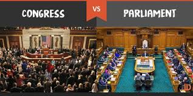

Governing Systems
Home
About
Background
US Constitution
British Governing Documents
Governing Systems
Conclusion
Citations
American Congress
- Our American governmnet system is deprived from the British through the English Parliament.
- The founders were fond of the idea of a governing body elected by the people to represent the people. IE Parliament
- Congress is the legislative branch of a governing system that has a congressional democracy.
- Members have more freedom and are not required to toe the party line as they cannot harm the government in the same way as parliamentarians.
British Parliament
- Parliament is the legislative branch of a governing system that has a parliamentary democracy
- British Parliament has 2 sections, The House of Lords and The House of Commons. These are equal to the Senate and the House of Reps
- Parliament Failed to represent all its subjects so the founders made sure Congress would represent all those in America
- A bicameral System was first implemented in Britain and later found it's way to America.
